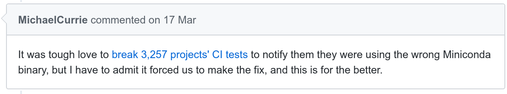

class: left, top # A comment on maintaining Python packages #### Typical Continuous Integration setup ``` wget https://repo.continuum.io/miniconda/Miniconda-latest-Linux-x86_64.sh ``` -- * used by 3k+ projects on Github * outdated 2016 conda version => use `Miniconda`**3**`-latest-Linux-x86_64.sh` * removed from https://repo.continuum.io/miniconda/ in May 2017  -- #### Steps to fix *x N package maintainers* * Detect the problem * Search for the source of the error * Implement a fix -- Can we make (small) changes across Github repositories? Also vulnerability fixing, etc. --- class: left, top # Could we 1. Introduction 2. Deep-dive 3. ... http://github.com/schoty or [@RomanYurchak](https://twitter.com/RomanYurchak)